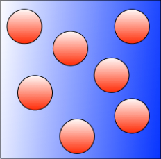

Quorum Sensing Networks
Over the past few years, the study of noise induced phenomena in complex networks of diffusively coupled dynamical systems has attracted much attention. The study of collective opinion dynamics, of coordination in biochemical systems, of mean field dynamics and memory effects in activity-driven networks are just a few examples of applications where noise plays a key role in determining the global emerging behavior of the network. Often, when studying noise-induced phenomena, it is assumed that nodes directly communicate with each other via exchanging information over a dedicated link. Unfortunately, this assumption is not satisfied for certain important applications. For example, in a biochemical context, it is often the case that network nodes (e.g. bacteria or neurons) communicate via a shared environmental medium. A classical example of these quorum sensing networks are bacteria, which communicate via signaling molecules (autoinducers) that diffuse in the extracellular environment, so that cells can react as a group to different conditions. Another important example is opinion formation dynamics in networks under social media influence.
Network Synchronization under Relative State-dependent Noise
In this project, we analyze node-node and node-medium synchronization in these quorum sensing networks, when nodes are affected by relative-state-dependent noise, and the medium has a different dynamics from the nodes. By using stochastic Lyapunov arguments, we give a number of sufficient conditions for the stability of the synchronization manifold, and compare the synchronization dynamics induced by common (extrinsic) noise and independent (intrinsic) noise. We also carry out a stochastic phase plane analysis of the dynamics on the synchronization manifold by introducing the notion of a stochastic invariant manifold.
[1] Fan, Gaoyang, Giovanni Russo and Paul C. Bressloff, Node to node and node to medium synchronization in quorum sensing networks affected by state dependent noise, SIAM J. Appl. Dyn. Syst. [Accepted] (2019).
- Key words:
Noise-induced Synchronization,
Quorum Sensing Networks
Stochastic Invariant Manifold